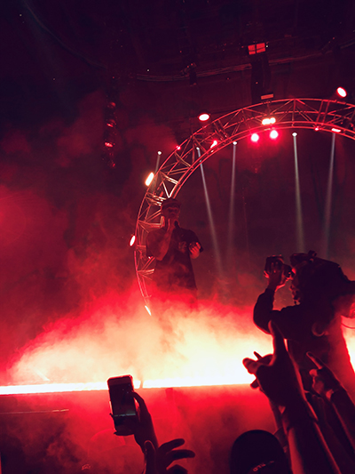

After Sheck Wes opened the show, there was a brief break where everyone waited for Travis to come out
Was blessed to get this close to Travis during his performance of the song Mamacita. This song is wild, and I nearly lost my phone in the ensuing mosh pit
What do you do when you name your tour after a famous amusment park in Huston? Get a roller coaster on stage of course! The roller coaster was mainly for aesthetic purposes, but he did ride it once with a fan, which I'm sure made their night.
This is a photo of the Astroworld hoodie I picked up. Im glad I purchased it, as it's a momento of a great show. However, for the $120 I paid, the material isn't perticularly comfortable and it's just a logo and some text on a black hoodie.
This was the closest I got to the stage all concert. It was surreal seeing one of my favourite artist up this close. I believe he was performing Way Back, which is one of my favourite songs.
The visuals during the whole show were EXTRMELY well done, they really added to the atmosphere. The closing visuals were perticularly stunning. This was taken during the second last song he performed, Drugs You Should Try It.